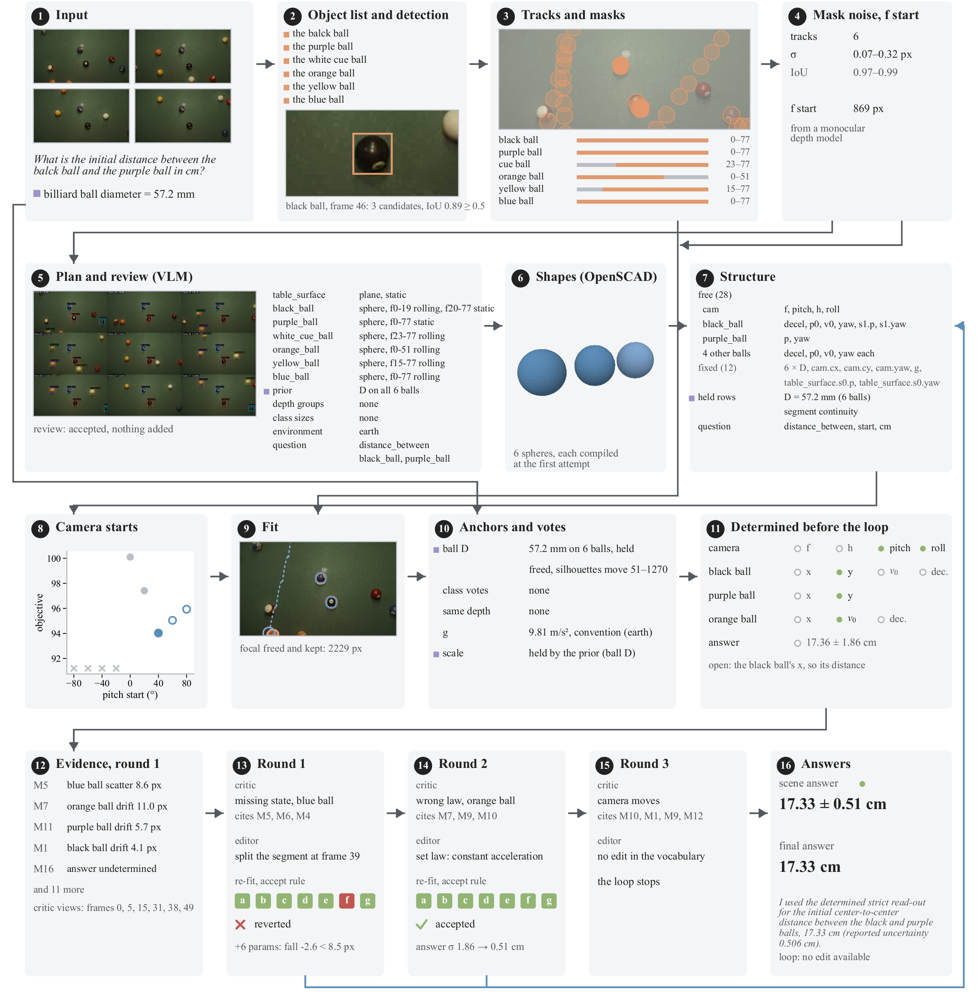

Pipeline
Each question is reconstructed on its own: perception gives tracks and masks, a model writes the scene as a program, Physics-guided Fitting measures its magnitudes against the video under the prior and physical law, a checking loop revises its structure, and the program gives two answers.

Input and perception
The input is a video, a question and a prior. The prior is parsed into numbered statements, each with a quantity, an object phrase, an SI value and, where given, a time; a distance statement is the depth of the object's centre along the optical axis. The harness below gives the program its observations, which stay fixed: the object list (step 1), one track with one mask per object and frame (step 4), and the focal length's start value from Depth Pro (step 8.1). Each object's mask noise σo, the median boundary distance between its masks on consecutive frames after their centroids are aligned, on frames where the mask is neither cut by the image border nor shared with another track, is the unit of every pixel threshold, with a floor of √2 px. The program never re-detects an object and never changes a statement's value.
Scene program
python -m pipeline.sceneprog.build --unit U --tag T --tracks-tag R · plan.py, author.py, structure.py
- Input
- A grid of nine frames, each labelled with its frame index and the tracks' boxes and names
- The question and the numbered prior statements
- Crops of each body for its shape
- Does
- Plan: the objects in build order (supports first, then what rests on them, then what is held or flies), each bound to a track or to none, with a shape kind, proportions L : W : H as ratios, the view in which the camera sees it, and its motion as a sequence of states, each with a frame range, a relation and its target, a law and a direction. The plan also binds every prior statement and the question, names the environment, and says whether the camera moves
- Review: a second call may add an object or sharpen a description; it may not remove, rename, rebind or reorder objects
- The plan is checked in code against fixed rules. A plan that breaks a rule is returned once with the reason; if the reply still breaks it, the rule is applied deterministically and the repair recorded. A statement binds only to a tracked object, a statement about a class binds to every tracked instance of it, and a size question binds to the axis the view shows
- Every prior statement has exactly one account: a binding to a parameter or derived quantity, an image measurement, or a declaration that nothing observable carries it, with the reason
- Depth groups: bodies at about the same distance from the camera, at a given frame or over their common presence; each becomes same-depth ties, and a tie that contradicts a distance statement is rejected. Class sizes: a commonsense size with its spread, a soft vote; a vote on the asked quantity is dropped. Image measurements: two end points marked on one grid frame, on the plane the feature lies on, back-projected through the current camera; for a repeated feature, the two farthest lines that can still be counted and the number of periods n between them
- Authoring: one OpenSCAD module per body, CSG primitives in the body's own frame normalised to the unit box; its metric extents are scene parameters. The module must use only whitelisted primitives, compile, form one connected solid, and have extents in the order of the planned proportions; a failure is returned with its measured reason, at most three times
- Structure: every number is a named parameter with a value, a unit, a σ and a source (prior, convention, class, fit, vlm). Values are set only where the prior or a convention gives them; a statement on a size or on g fixes that parameter, a statement on a derived quantity becomes a held row. The question is parsed in code into the quantity, a time or window, an aggregate, a component and the unit
- Output
outputs/sceneprog/<tag>/<unit>/:plan.json,plan_grid.jpg,scene.scad,structure.json,shape_<id>.png
| Relation | Placement |
|---|---|
on | The target's top face; the height comes from the support |
in, held_by, hangs_from | The target's own frame |
free | The world |
| Law | Parameters |
|---|---|
static | p |
constant_velocity | p0, v |
constant_acceleration | p0, v0, a |
ballistic | p0, v0, with g |
rolling | p0, v0, deceleration |
pendulum | pivot, L, θ0, ω0, azimuth, damping |
circular | centre, r, θ0, ω |
driven | a pose table |
Physics-guided Fitting
python -m pipeline.sceneprog.fit --unit U --tag T · fit.py
- Input
structure.json,scene.scad, the observed masks
- Does
- Objective: the silhouette discrepancy between the rendered program and each object's mask on every frame, over σo², symmetric, with occlusion and the image border not counted as error; the class votes; a weak pull toward the initial values. The held rows are constraints: the prior's statements on derived quantities (speed, acceleration, distance to camera, distance between objects, height above a support), image measurements, continuity of position (and of velocity where both laws imply it) across segments, same-depth ties and contacts
- Statements are targets: after every change, the parameters a group of rows reads are projected onto the set where all its rows hold. A row's tolerance is read from the problem (a stated value: half a unit of its last written digit) and is used only to decide whether a row is violated, whether two statements contradict each other, and how much a statement adds to the answer's σ
- Gravity: g is the environment's convention unless the prior states it; a free-flight or swinging segment makes it an anchor of the metric scale beside the prior, image measurements and class votes
- Order: the focal length starts from Depth Pro and is held. The first tracked body is fitted with the camera's pitch, roll and height from each pitch start; every start within one noise unit per frame of the best, and at least three, is carried through and the lowest final objective kept. The other bodies follow in build order with the camera and the earlier bodies frozen. A joint pass frees the focal length, kept only if the fit determines it within the physical field of view; each extent the observations determine on its own is freed; segment boundaries may move by up to three frames
- Gates per object: the program evaluates, its held rows hold, its relations hold, and its pose agrees with its masks: the constant part, the drift and the scatter of the per-frame alignment, each at most max(σo, √2 px)
- Identifiability: a parameter's σ is the largest of the linearised covariance, a frame-clustered sandwich covariance, a profile along the weakest directions and the spread over equally good starts. A parameter is undetermined, with a reason, if σ exceeds a quarter of its natural scale, it loads a direction of zero curvature, it affects no frame or row, or it ends at a bound. The scale is determined only if some anchor resists a common scaling of every unanchored length, speed and acceleration; each anchor is then tested alone
- Scene answer: the asked quantity evaluated on the program, a size or g directly, a speed, acceleration, distance or height from the laws at the asked time or window; its σ adds the statements' precision and the misfit of the frames it is read from. It is undetermined, with a named reason, if anything it reads is undetermined, a held row is violated, the scale rests only on a class vote pulled beyond 3σ, or the program has no expression for the asked quantity
- Output
scene.json(every parameter with value, σ, source and determined flag),fit.json(starts, gates, rows, anchors, the scene answer)
Checking loop
python -m pipeline.sceneprog.loop --unit U --tag T --out-tag T2 · loop.py, critic.py, edits.py
- Input
- The fitted program and its numbered measurements: each pose or shape residual above its threshold, each failed gate, each held row beyond its tolerance, each statement left unused, each relation to an untracked object, each track no object models, each tracked frame outside an object's segments, and an undetermined answer or scale
- Does
- Critic: sees six frames with the observed outlines and the rendered program, the structure, the measurements and the loop's history, and returns at most five issues of a closed set of kinds; an issue that does not cite a measurement of its own object is dropped
- Editor: proposes one edit for the first issue whose kind admits one. An edit carries categories, frame indices and ratios, never a metric magnitude. It is applied to the plan, rebuilt and checked by the plan's rules; an edit that would change what the prior means, turn a sphere into another shape, untrack an object or change whether the camera moves is refused. The scene is re-fitted warm, with the camera held
- Accept rule, all of: (a) the cited measurement improves by more than its noise threshold, or its gate or row turns to pass; (b) no gate that passed fails; (c) no held row that held is lost; (d) the mean per-frame objective does not rise by more than two standard errors; (e) a determined answer or scale stays determined; (f) an owner whose free parameter count rises by Δk lowers its summed pose residual by more than Δk times its pose threshold; (g) an edit that moves the answer by more than its σ improves the silhouettes by more than the mask noise. Otherwise the program returns exactly to its previous state
- A critic pass precedes every edit, one edit is pending at a time, and no edit is repeated. The loop converges when every gate passes and the answer stayed within its σ over the last round; it stops after four accepted edits or eight proposals, when no issue admits an edit, or when a re-fit exceeds its time limit, keeping the last accepted program
- Output
outputs/sceneprog/<out-tag>/<unit>/:loop.json(rounds, every proposal with its accept rule and decision),views_r<k>.jpg, and the finalplan.json,structure.json,scene.json,fit.json
| Issue kind | Edits |
|---|---|
| wrong law | set a law; split a segment |
| wrong boundary | move a boundary |
| missing state | split or add a segment |
| extra state | remove a segment |
| wrong relation | set a relation; set a part's box |
| wrong shape | re-author a shape |
| wrong proportions | set proportions |
| wrong depth group | add or remove a depth group; set its frame |
| missing object | add an object for an unmodelled track |
| wrong track binding | rebind a track |
| wrong measurement | re-mark a measurement |
| moving camera | none |
Answers
python -m pipeline.sceneprog.answer --unit U --tag T · answer.py
- Scene answer
- The strict read-out of the fit: a value only when the program determines it, otherwise undetermined with its reasons, scored 0
- Final answer
- One model call for every question, determined or not: the question, the prior, the frame grid, up to five overlays of the rendered program, and the program's parameters with value, σ, source and determined flag, its segments and laws, the camera and scale, and the statements that are held, violated, unused or unbound. It returns one number in the asked unit with a rationale and the inputs it relied on. The reported MRA is the final answer's; both answers and both MRAs are kept
- Output
answer.jsonbeside the finalfit.json
Harness
One question is one unit, <video_id>_q<k>. The harness runs these ten steps in order for each unit, using only its own question, prior and depth_info. Units of the same video share only caches that depend on the video alone: SAM 2 propagations of a prompt box, support masks segmented by name, floor masks and depth maps. Its own answer (step 10) is given only when every named check passes.
Entry point: python -m pipeline.harness, steps in harness.STEP_ORDER. The fit flags are in pipeline/config.py FIT_ARGS. The harness refuses to start under a Python that is not the project environment's or cannot import a step module (harness.interpreter), since every step runs with its interpreter.
| Environment variable | Meaning |
|---|---|
QP_MODEL_BACKEND | qwen (default) or gpt: every model call goes to the local OpenAI-compatible proxy (QP_GPT_URL, QP_GPT_MODEL, QP_GPT_KEY_FILE), no fallback to Qwen; harness --model-backend gpt, with a run tag of its own |
QWEN_URLS (or QWEN_URL) | Endpoints, comma-separated, used round-robin |
QWEN_MODEL | Model name in the request |
QP_MODEL_API_KEY / QP_MODEL_API_KEY_FILE | Optional Bearer token, read on every request, never written to an artifact |
QP_REASONING_EFFORT | Optional reasoning_effort (non-vLLM Qwen backends) |
QP_GROUNDING_FORMAT | prompt (default) or json_schema |
No environment variable selects a behaviour of any step (code.no_switches): each former switch is now the one behaviour. The others the steps read are run plumbing the harness sets: work root, run tag, commit and signatures, cache kinds, QP_STEP_TIMEOUT (--step-timeout), the request memo and limits, the test-split flag, and QP_CHOOSE_DEBUG for the chooser's contact sheets.
Every step: an expected exception a step goes on without is recorded as {where, type, msg} on the record that lacks the value, and a model call that fails is retried once (errors.recorded); anything else stops the unit.
Time per step
| Step | Timing key | Median (s) | Min | Max |
|---|---|---|---|---|
| 1 Objects | objects | 22.1 | 0.0 | 47.7 |
| 2 Scene graph (grid) | scenegraph_grid | 5.3 | 0.0 | 22.1 |
| 3 Observe | observe | 38.2 | 0.0 | 1752.0 |
| 4 Track | track | 225.2 | 0.0 | 1176.0 |
| 5 Measure | measure | 139.5 | 9.2 | 1868.0 |
| 6 Scene graph (per frame) | scenegraph_pf | 50.5 | 0.0 | 3336.0 |
| 7 Ground | ground | 33.3 | 1.0 | 1258.0 |
| 8 Scene | scene | 166.7 | 16.8 | 2500.0 |
| 9 Agent loop | agent | 443.4 | 0.1 | 13250.0 |
| 10 Answer | answer | 0.0 | 0.0 | 0.1 |
| Total | total_seconds | 1671.0 | 223.9 | 16219.0 |
The 158 of the 159 questions that ran every step (timing.steps of their answer records).
| Step | Timing key | Median | Max | Total |
|---|---|---|---|---|
| Harness products in | 1 s | 5 s | 0.1 h | |
| Masks | masks | 50 s | 143 s | 2.3 h |
| Scene program | build | 92 s | 252 s | 4.2 h |
| Physics-guided Fitting | fit | 20 min | 3.1 h | 89.9 h |
| Checking loop | loop | 9.5 min | 84 min | 39.4 h |
| Answers | answer | 6 s | 42 s | 0.3 h |
The scene-program chain of the same 158 questions.
1 Objects
python -m pipeline.objects --units U · objects.py (inventory format 8)
- Input
- The unit's row:
question,prior,depth_info; no other row - The agent's note
outputs/critic/hints/<split>/<unit>.json→objects, if one exists - 6 frames for the extra objects (
llm_extras) and one frame grid for the class references (llm_references) - The class-size table
pipeline/class_sizes.py(step 8.3)
- The unit's row:
- Does
- Rule parser (
parse.py) collects candidate names: the question's object and reference, the prior's object, and the names in depth_info ("the X"; cameras skipped, end points such as "desk left" map to the whole object) - The model (
PROMPT, text only) groups the spellings into objects: name, aliases, track, shape / location hint, size class, role, count, part_of _repair,split_parts,normalize_roles,bind_by_time: each candidate in exactly one object; parts become their own objects; a dynamic prior's object is role object; a spacing prior makes a structure + reference-only object; a depth-only object timed like the single moving object is bound to itdepth_bindings(objects.depth_bindings, rulescale.anchors_bound): every depth statement is bound by name to an inventory node — as the object, as an end point of it ("desk left" → the desk, end left) or by time to the moving object whose asked times it carries — or listed as unbound with the reason; none is dropped silently. Record{given, bound[{name, node, as, alias, sim, end}], unbound[{name, reason}]}; the scene records the names it used indepth_name_bindingsAGENCY_PROMPTsetsagency(passive / self_propelled / carried),body(solid / hollow) andlocomotion(none / walks / flies / swims / floats / orbits / rolls / slides). A missing or invalid agency or locomotion raisesllm_extras: objects the texts do not name but the measurement needs, on the model's own judgment, e.g. a free-flying gravity reference; each is tracked like any other object and carriesextra{role, reason}llm_references(scale.class_reference): one frame-grid call gives the class of every listed object (a table key or null), up to 4 other visible instances of a table class seen whole in one frame: reference objects,roleandextra.rolebothreference(one role; its class role stays insize_reference.role), each only a size read for its class vote (reference.size_only, steps 4, 6, 8.3), and whether the video is a rendering. A rendering is a verdict with evidence (scene.rendered): the model names cues from a fixed list (synthetic_surface,engine_overlay,impossible_camera,engine_objects,clean_image,animation_style), each on a shown frame by its time stamp and with a reason; a cue without a listed kind, a shown frame or a reason is rejected (cue.kind_unknown,cue.frame_unknown,cue.why_missing), and an answer "rendered" without a valid cue is no verdict (rendered.unsupported, the classes kept). The video's split, source and file name are no input. A rendered video accepts no class; the object whose own size the question asks isself_referenceand never votes for it. Each listed object getssize_class,size_reference(its class's row of the table) andself_reference; a rejected reference names its reason:class.unknown,class.not_answered,name.listed,name.ground,name.duplicate,references.max,scene.rendered
- Rule parser (
- Output
objects_<tag>/<unit>.json:objects[]withname, aliases, track, shape_hint, location_hint, grounding_phrase, expected_size_class, role, count, reference_only, part_of, agency, body, locomotion, size_class, size_reference{class, dim, lo, hi, value, sigma, part, source, role, observe, table, dims[]}, self_reference(rolereferencefor a reference object, inextra.roletoo), optionallybound_to, measure_as, extra; per unitrendered{verdict, answer, cues[{kind, where, why}], cues_rejected[{kind, where, why, reason}], why, reason},class_table,references{status},reference_rejected[{name, class, reason, why}]. A cache of another format raises
- Checks
- Two objects merged, or one split → wrong or doubled track → tracked, fit
- Wrong role, reference_only or
bound_to→ wrong scale object or no depth anchor → scale, constraints - Wrong
locomotion→ wrong state models (step 8.4): a flying object tested for free fall, or a falling one not → segfit - Wrong
agency→ plausible (passive_motion / agent_motion) - No gravity reference where the scale needs one → scale
- A wrong class or a rendering called real → a class vote off the stated scale, recorded, never a gate (step 8.3)
2 Scene graph (grid)
python -m pipeline.scenegraph --units U --redo · scenegraph.py build
- Input
- Question and prior; inventory objects to track, plus non-ground structures
- 6 frames,
linspace(0, N−1, 6), tiled 3×2 with time stamps - The agent's note →
scenegraph, if one exists
- Does
- The model names each object's support or holder and relation: on, in, above, airborne, held_by, attached_to
- Rotation relations (
ROTATION_RELS):orbits(a closed curve around a body),rotates_about(a fixed centre on a circular path),pivot(turns about a fixed point);to= the centre or pivot, null = an unnamed fixed point; only for an object whose path curves around a centre _clean,_canon_targets: unknown objects and relations dropped; support names mapped to inventory objectstable_planesetsmain_support- Reference objects (
reference.size_only) have no state, relation, event or test: they are listed only inreferenceswith their frame set; a graph that names one in a node, an edge, a per-frame phase or an event raises - Every edge names its source (
source:gridhere,per-framein step 6,agentfor an agent edit) and carries no confidence (decisions.no_conf); where edges disagree the source order agent > per-frame > grid decides, then the longer edge
- Output
scenegraph_grid_<tag>/<unit>.json:nodes,format: 3,edges[{from, to, rel, t_start, t_end, source}],references[{name, class, role, frames}],frames_t,size_order,main_support,support_objects- Its support nodes are the names step 3 segments (
scenegraph.support_names)
- Checks
- A support missing from the grid graph gets no mask in step 3 (step 7 segments it later, after the per-frame graph)
- Wrong
main_support→ wrong floor and plane → contact, plausible (support_plane, heights) - A missing rotation relation → no circle among the models → fit.law, segfit
3 Observe
python -m pipeline.ground --units U --supports --graph-kind scenegraph_grid_<tag> (GPU)
- Input
- The support nodes of the grid graph: its support nodes, "on" targets, main support, and the inventory's structures and surface objects; holders and rotation centres are not supports
- The 16 frames the per-frame graph samples (
scenegraph.pf_frames); video only, no track and no graph decision
- Does
- Each support node is segmented by name: GDINO box, SAM 2 mask, on each of the 16 frames
- Raw masks are untrimmed and shared by the video's units and run tags (keyed by video, frames and query)
- Output
ground_<tag>/supports/<unit>.json: support name → its segmentation; masks inground/<video>/sup_<key>/raw_f*.png+seg.json- Read later through
ground.support_masks(split, unit) → {support: {frame: mask}} - Timing
shared.support_masks: shared or computed
- Checks
- A name segmented onto the wrong surface (GDINO "inclined ramp surface" → the desk) → a wrong support region → contact, plausible (heights)
4 Track
pipeline.track (track_cmd) → pipeline.presence --merge-from (merge_cmd) → pipeline.presence · perceive.py, presence.py, track_validation.py
- Input
- Names to track: the question's object and reference, the prior's object, objects named only in depth_info, and the inventory's extra objects
- Hints per object: location hint, grounding phrase, size class, count, role, part_of, question / prior / depth_info text
- Motion window for speed / acceleration / displacement questions; supports from the grid graph's "on" edges (the track step reads only the grid graph,
track.grid_graph_only); the agent's note →track - All frames (SAM 2)
- Does
- GDINO on 6 evenly spaced probe frames, one query per name; candidates per object (name, singular, grounding phrase), merged at IoU > 0.7, plus the model's own
groundbox - Filters: oversized boxes, a part outside its whole, a support that does not carry its objects, border boxes, boxes on another object's chosen box
- A detector box covering ≥ 90 % of the frame or with an edge more than 3 px outside it is the image, not a thing: dropped from the choice and from the alternatives before verify (
candidate.full_frame) - One model grid of the probe frames labels every object full / partial / absent per tile and names its most complete, largest appearance; each object's box is chosen on its choice frame, which never moves without a reason (
choice.frame_stable): the shared probe frame when the scan has the object full there (the scan's own best never overrides it); when it is partial or absent there, its best full frame, else its full frame nearest the shared frame (ties → the earlier), else its best partial frame, else its partial frame nearest the shared frame; no scan answer, or absent on every scanned frame → the shared frame; a present interval takes precedence. The record keeps the frame, the rule that chose it and the scan's label of the shared frame qwen_choosepicks one numbered candidate from a sheet with crops; count ≥ 2 gives distinct instances"<name> #j"- SAM 2 propagates each box forward and backward (memo shared across the video's units); mask → box, centroid, area
- A mask is one object (
track.mask_one_component): each SAM 2 mask is split into 8-connected components, and the frames are visited in propagation order (forward from the first prompt frame, then backward). A frame keeps every component with a pixel inside its reference box — the prompt box on a prompt frame, else the previous visited frame's kept box — so an object cut by a thin occluder stays whole; when none touches it, the component nearest the reference box. The others join nearest first while the kept box stays within 1.25 × the reference box's width and height; the rest are dropped. Box, centroid and area are the kept mask's. Per box edge, an outward step beyond 3√2 robust σ of the edge's local motion, followed within 6 frames by an inward step that brings it back, marks the frames between asleakwhen both sides are off the image border; the box is not smoothed - Identity judge: every candidate track (the chosen box, a prior re-check or motion-check replacement, an agent re-track, then the detector, model and zoomed-tile boxes) passes the same named checks in turn; the first that passes all of them is the track:
static: an object asked about its motion, or a moving prior object, moves inside the motion window; the motion evidence is the larger of the centre displacement over its threshold and the box size change over log 1.25, so a box that grows or shrinks by 25 % moves radially (identity.moves)verify:VERIFY_PROMPTon 3 frames; a "no" majority rejectsclass_size: mask area × depth² against every accepted object, the median ratio inside the two classes' silhouette bounds (overhead view for objects moving on a ground that faces the camera, any view otherwise), each length widened 1.25×presence: 6 frames over the track; leading and trailing "no" runs cut by bisection; a "no" majority after the cut rejectsborder: a track on the image border in ≥ 90 % of its frames needs a clear "yes" majority
staticwhile the object's motion is asserted (its motion question, the prior's motion statement, its locomotion), those are judged again most-moving first without the static rejection; verify and presence stay hard rejections (identity.whole_set). Every candidate rejected → the object isuntrackedin this question: no track, no detector or foreground fallback - The choose record and the accepted track are one binding (
choose.track_binding): the record names the candidate the identity judge accepted (frame, box, source), the chooser's own picks it did not take go underrejectedwith the identity outcome, andaccepted_framesays where the track starts; the record's box against the propagation's own box on that frame must reach IoU 0.5, else the object is untracked and its record names no box - A track continues while its object is visible (
track.visible_span): place and order words in a name (left, right, first) pick out the instance only at the track's start, and the span judge is asked about the object's kind, not its place. Every track end carries a reason:out_of_frame,occluded,presence_noorclip_end. Overlap with another instance of the same class neither ends nor merges the track; its frames are recorded asoverlap_same_classfor the fit - Inventory presence (
presence.verdict) by the grid votes alone, no confidence and no detector-score gate: some grid votes visible → visible (presence.visible_vote); none visible and one partial → partial (presence.partial_vote); every grid votes absent → a zoom re-check on enlarged crops around the object's track, unless that track rides on another object: a "visible" majority → partial (presence.zoom_found, the detector score recorded), else absent (presence.absent_all_grids); no vote → unknown (presence.incomplete) - Grids that disagree (one absent, another visible or partial) go to the same zoom re-check instead of a majority (
presence.split_vote→presence.zoom_found/presence.zoom_absent, or unknown); a zoom vote is visible, not visible or unknown, and every verdict carries itsreason - Presence is asked again whenever the track step or the inventory was rebuilt (a fresh track, a missing merged track, an inventory the objects step re-ran, an agent re-track); a resumed chain reuses it (
harness.fresh_presence) - A reference object is tracked only on its frame set
objects.reference_frames(n): the 6 reference-grid frames and the depth model's 12 frames, each ±2 (279 frames → 76): SAM 2 propagates on that subset as its own short video, no box falls outside it, its ends are judged on the set and a gap between set frames is no track break (reference.size_only) - Merge into the run's cache with the inventory's presence label (absent / partial / visible). The identity record is the only judgement of a track: no box-shape rule, no second crop vote
- GDINO on 6 evenly spaced probe frames, one query per name; candidates per object (name, singular, grounding phrase), merged at IoU > 0.7, plus the model's own
- Output
tracks_<tag>raw/<unit>.json→tracks_<tag>/<unit>.json:tracks{name: {boxes, scores, centroids, areas, ends{start, end: {frame, reason, why}}, overlap_same_class[frames], role, frame_set, mask{components{dropped[{frame, area, box, why}], leak[frames], rule}}}}(masknull for a track without masks) (rolereferenceandframe_setfor a reference track, both null otherwise),meta.overlap_same_class{name: {class, frames, by}};meta.choose,meta.recheck,meta.shared{sam2_hits, sam2_misses},meta.identity{name: {candidates[{source, frame, box, n_frames, moves, votes, class_size, presence, border_frac, outcome, why}], chosen, untracked}}objects_<tag>_presence_v4/<unit>.json:{name: {present, rule, reason, votes, zoom_votes, zoom_errors}};trackcheck/tracks_<tag>/<unit>.json, derived frommeta.identity:checks{name: {verified, reasons, votes, identity{chosen, n_candidates, rejected, source, outcome}}}
- Checks
- An
untrackedobject (the reason carries the identity judge's why), fewer than 3 boxes, no box at the asked time,verified: false, or (direct) no minimal window around t → tracked - The scale object (the prior's object, the free-flying gravity object, a tracked reference object) without a track chosen by its identity record → scale (
scale.checks.track) - A track on the wrong object that passes verification shows up later: agree (fit and direct disagree), plausible (dims, accelerations)
- Boxes on the image border → visible (direct window), truncated dimensions
- An
5 Measure
pipeline.refmeasure → pipeline.ground --tracked-supports → pipeline.extents2d (GPU)
5.1 refmeasure
- Input
- Targets: the unit's structure prior or structure question (lane, ruler graduation, tiles, door), reference-only objects
- Inventory location hint, the unit's tracks, frames
- Does
- The definition of the extent is spelled out in the prompt; the model marks two end points p0 / p1 on several frames
- Median length in px over the marked frames
- A graduation (ruler, tape, grid paper, scale bar) must identify which graduation it measures: the tick hierarchy (
periodic: 1 mm ticks under 5 mm / 1 cm marks) or the printed numbers and unit the model reads on ≥ 2 frames (_labelled). The model's adjacent-tick spacing is never taken as the prior's unit - A lane width: a lane profile across the lane
- Output
refmeasure_v10_<tag>/<unit>.json, keyobject|quantity:px, p0, p1, frame, frames, per_frame, relation, spread; a graduation alsospacing_px, unit, unit_m, graduation, n_ticks, px_per_m, candidates; named checkspass, checks, failed, why, no confidence
- Checks
- Named checks of the record:
marked(≥ 2 frames),frames_agree,not_truncated; a graduation:unit_identified,graduations_agree,prior_interval; a lane:lane_profile,across_lane endpoints_outside(recomputed on every read against the current tracks): a tracked object's used end points lie inside its track box on their frames, within 1 % of the frame diagonal; the distances in px are in the scale's reason- A failed record is not used (it stays in the cache with its reasons) → no reference scale → scale; the refmeasure / endpoints measurement is inadmissible
- A tracked reference object fitted farther than 1.25 × nominal × f / px (nearest face, at the measurement's frame) → scale (
reference_depth)
- Named checks of the record:
5.2 Tracked supports
- Does
- A support that is tracked gets SAM 2 masks on its own track boxes, the region the per-frame graph's tests read
- Output
ground/<video>/box_<key>/raw_f*.png; the unit's support index lists them
5.3 Mask extents
- Input
- Every unit's track cache, all tracked frames of every track; the frames
- Does
- SAM 2 image model on each tracked frame, prompted by the frame's track box (no detector, no re-tracking); the mask's convex hull, principal angle, major / minor extent and 25 widths across the axis
speed_px: the object's image speed in px / frame (central difference of the mask centroids over the nearest tracked neighbours)extent.overlay: in 16 sectors around the centroid, a ring of its own colour along the mask boundary with near-constant width (an outline painted by a segmentation demo) marks an overlay; then every extent is the interior's (the mask without the ring), withring_pxandextent_raw
- Read
extent.static: motion blur lengthens the silhouette along the image motion m by at most speed_px · |u · m| along a direction u (no shutter data: shutter fully open) and leaves the extent across the motion unchanged. A frame is static for u when that bound ≤ σmask, the object's own extent jitter (MAD of consecutive differences / √2, at least the edge quantisation 1 / √6 px)- A moving frame is admissible unless its extent exceeds by more than 3σ what its nearest static neighbours on both sides predict from its own extent across the motion; a sphere's diameter is the extent across the motion on every frame
- The extent at a time t: up to two admissible frames on each side of t, a line in 1 / extent (∝ depth) over frames, σ = the scatter, at least σmask; never a global median, since the object may approach or recede. Without a time: the median over admissible frames
- Every pixel size that sets a focal length, a depth or a scale reads it: the size prior's focal vote at the depth anchors,
prior_focal,focal.class_size, the size depth series (blurred frames dropped), the prior-scale extent and the direct size. A missing extents file is an error
- Output
extents2d_<tag>/<unit>.json(format 3): per track and framehull, area, angle, major, minor, slices, extent, speed_px, overlay, overlay_test{ring_px, ring_sigma_px, widths, why}
6 Scene graph (per frame)
python -m pipeline.scenegraph --units U --redo --per-frame --grid-from scenegraph_grid_<tag>
- Input
- The grid graph (step 2), the merged tracks and their present intervals (step 4), the inventory with
locomotion - 16 frames,
linspace(0, N−1, 16); the support masks by name (step 3) and of tracked supports (step 5.2)
- The grid graph (step 2), the merged tracks and their present intervals (step 4), the inventory with
- Does
- Track events per object: moving, onset, turns; a swing period for hanging objects
- Each moving object on each of the 16 frames: the model chooses on <support> / airborne / held / hanging, and for an object whose whole track is not a straight line also orbiting / rotating about / pivoting about a centre
- Labels smoothed (majority of 3), merged into phases; boundaries snap to a track event
- Rotation options are offered to the model only for a curved track (
path_curve: the turning angle of the equivalent arc, θ = 4 atan(2s / L) from the sagitta s across the principal axis, minus 6σ of the track jitter) - Self-test (
builder.self_test): after the phases are merged, every edge is tested over its own span by the same geometric tests as an agent edit (state_test:on.region+on.no_hop,airborne.ballisticper hop,attached.pivot,orbit.conic) and carriestest{name, result, why, values}. σmask is the larger of the static on-object calibration and the region's own boundary scale (1.4826 MAD of the upper-boundary row about its per-column median, in quadrature with one SAM 2 grid cell / √12). A hop whose centre stays within 3σ of its median on both axes fails (airborne.static); inclined supports use the region interior; the pivot is checked against the vertex of the quadratic y(x) with its standard error; a path that turns < 180° is untestable as an orbit - A failed span merges into the previous, else the next, edge only if that edge's state re-tested over the joined span passes (
absorbedon that edge); otherwise it is removed and listed inunknownwith its test and reason (state.unknown); untestable spans stay - Release at each held → airborne boundary is an interval [lo, hi] (
release.interval): the span where the hand cue and the free-flight cue disagree — lo the last frame both say contact (else the last guided frame; the last hand-contact frame only when the free cue never says guided), hi the first frame after lo and after the hand-contact run where neither says contact (none before a bounce: the last frame before it); the phase boundary is the midpoint, and the airborne edge keeps the per-frame cue table - A frame is "on S" only with contact evidence: the box-bottom midpoint within
on.region's bound of S's region (a border frame is no evidence). The frames of an "on S" edge after its last contact frame, all without contact, are a launch off the support's end (state.launch):t_launch[last contact, first no contact], the boundary its midpoint; the airborne edge after it starts there, or one is inserted (event: launch); a launch under 5 tracked frames is still a phase, its flight untestable (launch_why) - A frame where a moving object is not fully seen holds no state (
state.occluded_not_airborne): outside its track, a gap in it, a box on the image border, a sliver (mask area < 0.15 × the track's median), or occluded (another tracked object's mask hull within r of its own and its mask area below what its untouched neighbours on both sides predict by more than 3√2 σ; supports never occlude; ≥ 3 frames). Runs of such frames are unobserved phases (graph["unobserved"], with the frames and why), not edges: the object's state edges are cut there before the launch search and again afterflight_end, a launch takes no contact evidence from them and needs its next state without a gap, and an airborne span over any of them fails. The self-test's neighbour merge joins only touching spans - The two halves of a launch, the "on S" edge and the airborne edge with
t_launch, are one pair (graph_edit.launch_pair): an edit that re-times the airborne start movest_launchwith it (launch_moved); an edit, merge or unobserved cut that removes the airborne half, or leaves it behind a gap, clears the pair from every surviving half (launch_removed); a half without its pair is the named errorlaunch.orphaned_half - An airborne or held_by phase that rests only on the model's labels fails when the image contradicts them (
state.label_only): airborne whose box bottom stays within the contact bound of the neighbouring support on every frame (≥ 3) and never rises (state.grounded); held_by an untracked holder with no Grounding DINO box of the holder's class touching the object on at least half of the frames (held_by.agent_box). The failed span merges into its neighbour or becomes unknown, as any failed edge; a check that does not fail is kept in the edge's test values - Every on / in edge between two objects is decided by their masks (
contained.same_depth): A is inside B on a frame when |A ∩ B| / |A| reaches |erode(A, r)| / |A|, r = 3√(σA² + σB²), σ one SAM 2 grid cell / √12; fewer than 3 frames with evidence → untestable (the edge is kept), outside on 3 consecutive frames → "on", else "in". The extents2d hulls decide first; only hulls that say "in" go to the SAM 2 masks of both boxes (an object resting on B in front of it leaves a hole in B's mask). The edge records itscontainment{verdict, level, inside_frac, bound, frames}and the label it corrected - Contacts between nearby boxes, kept on ≥ 2 frames; edges cut to the track's present intervals
- A landing or catch the grid states right after a flight is an edge of the graph with
event: flight_end(scenegraph.flight_end): kept at zero length, at the clip end, and when the other object's track ends a few frames earlier (its test then untestable); an edge whose test fails goes tounknown - Two state edges of one object from the same source with different relations over a common span are a conflict (
scenegraph.overlap): the relation is unknown there, no confidence or order picks one; step 8 adds the span to the object's unknown spans - An object left untracked by its identity record (step 4) is not a node and has no edge; a holder or support it names stays a node
- Agent edits (step 9,
scenegraph_set_relation) may move a state boundary or change a state, never remove one: an edit that leaves an object with no motion state over an interval is rejected (graph_edit.keeps_state, result "rejected: …"). A state an edit sets (any relation but contact) is re-tested by the same geometric tests over its state run — the edited window joined with the touching edges of the same object, state and target — on the unit's own tracks, support masks and locomotion (graph_edit.retest); fail → rejected, "rejected (rule graph_edit.retest): …" with the test's name and numbers; pass / untestable → the edge is written withtest{name, result, why, values}, and a tested state set over a builder-unknown span replaces that part ofunknown. A set or clear of a state over an unobserved phase of the object is clipped to its observed parts of at least one frame step; with none left it is rejected, and a proposed call so rejected is listed in the round'srejected_calls(graph_edit.unobserved_kept); a state edge over an unobserved phase fails the graph's read (unobserved.covered) - When step 8 loads the graph, an "above" edge of an object that is also on / in / held / attached / airborne at other times is airborne, so a flight it touches stays one ballistic piece (
above.airborne; the edge keepswas{rel, to}and names itsrule); an object whose edges are all "above" is an overhead structure and keeps them
- Output
scenegraph_<tag>/<unit>.json: grid fields plusevents,per_frame{obj: [{t, label}]}, edges withtest,absorbed,t_release[lo, hi],release_rule{rule, lo, hi},release_why{why, lo, hi, last_contact, first_no_contact, bounce, frames}, rotation edges withcurve{theta_deg, extent_px, n},untracked{name: why},unknown[{from, rel, to, t_start, t_end, test, reason}],self_test{tested, fail, merged, unknown},conflicts[{name, from, source, t_start, t_end, edges, why}],referencesas in step 2- Read by step 8 as the phases of each object (
motion_phases): state and allowed models per phase, cut where its support changes and at every unknown span (before the first edge, between two edges, after the last)
- Checks
- Wrong phase state → wrong model set → segfit (no model of the state fits the piece)
- An asked time inside an unknown span or a conflict → state, the reason naming the conflict
- A rotation phase kept or rejected wrongly → fit.law (rotation without the rotation law) or a circle where there is none
- A support change inside a motion piece → contact (the piece spans the change)
- Wrong
t_releaseor phase bounds → fit.piece, plausible (passive_motion)
7 Ground
python -m pipeline.ground --units U (GPU) · ground.py
- Input
- The per-frame graph's supports and
main_support; the support masks of step 3 - The unit's tracked objects (cut out of the floor);
is_masked/bg
- The per-frame graph's supports and
- Does
- Segments every support the final graph names that step 3 did not
- Floor = the visible pixels of the main support, the unit's tracked objects cut out; no main support → no floor
- Structure axes; overhead structures: base / top points marked on 3 frames (walls)
- Output
ground_<tag>/<unit>.json:support, floor_key, floor_shared, floor[{frame, png, area_frac}], structures, walls- Timing
shared.ground_floor: shared or computed
- Checks
- A wrong or missing floor → no support plane or a wrong one (step 8.2) → contact, plausible (support_plane, heights), and for a prior-scaled scene a wrong nominal scale → scale
8 Scene
python -m pipeline.scene_fit --unit U --out … $FIT_ARGS · scene_fit.py, fit3d.py, scene_depth.py, prior_scale.py, calibrate.py, solve.py, physics.py
- Input
- Row:
question,prior,depth_info(empty → the scene is scaled by the prior) - Inventory, per-frame graph, tracks + trackcheck, ground and support masks, refmeasure, frames
- Row:
- Output
outputs/scene_fit_eval/h_<tag>/<unit>.json:camera{f, f_sigma, f_sigma_how, f_source, "scale.source", focal_spread, support_plane, support_rejected, s, metric, plane_fusion}(every key present; the prior-scale keys null with depth statements),focal{votes, f, source, consistent[], fusion{pass, reason, f, sigma, n_sources, camera_f, camera_sigma, sources[{object, kind, f, sigma, n_votes, camera, verdict, why, bounded}]}},support_plane{pass, failed, reason, tests},support_horizon,camera_roll,scale{s, source, object, extent, checks, failed, full_extent{agent: {variant, depth, pass, frames_used, frames_excluded}}, class_reference},"scale.class_reference"{mode, role, votes[{source, object, class, dim, key, value, sigma, px, extent, n_frames, frames, size_only, frame_set, z_how, anchored, s | f, sigma_s | sigma_f, z, pass, reason}], used, skipped[{name, reason, why, anchored_readings}], carries_scale, stated{value, sigma, source}, pass, reason},references{name: {role, size_only, size_reference, read{frames, n_frames, frame_set, excluded, n_depth, headings{path, shared_yaw}, rms_box_px, dims, dim_source, shape, scale}, state, why, reason, size.full_extent, dims.agent_height}},gravity{g, sigma, source, rule, up, up_source, evidence[], checks, failed},"gravity.up"{name, up, up_source, roll, pitch, skipped, why},plane_ok(=support_plane.pass),main_support,main_plane{source, n_mask_points, n_contacts, tilt_deg, refit{was, now}},scale_contact{pass, reason, events[{…, reach{point, H, H_how, sigma_reach}, sigma_plane_depth}], refit{…, rescaled}, after},depth_rows{object: {name, pass, z_mask, z_plane, bound, n_rows, n_matched, dropped, odd, ground, plane_sigma_added, reason}},objects[name].fit_object{pass, s2, dof, bound, chi2, rows, stated[], box_noise_px{sides, …}, box_bias_px{sides, …}, box_noise_test, state_mismatch},objects[name]["size.full_extent"]{pass, reason, frames_used, frames_excluded{overlap, shrink, border, no_depth}, extent_px, extent_norm, ref_norm, depth},objects[name].motion_law.release_fit{name, t, lo, hi, t_stop, sigma_px, tried, why},support_incline{support: {method, theta_deg, sigma_deg, sigma_f_deg, length_m, inclined, down, ends, up{level, angle_deg, sigma_deg, source, why}, why}},incline_up,"plan.overhead_seen_from_below"[],objects[name].support{mode, target, rule, was, "plan.overhead_seen_from_below"},scene_graph(the graph as fitted; rewritten edges withwas,rule)extents{object: {dim: {sigma_mask, sigma_mask_how, at: {label: {value, sigma, frames_used, frames_rejected[{frame, speed_px, extent, why}], how}}}}}(alsoobjects[name].extent),camera_sources[{object, frames, t, rule}],camera_one{f, sigma, how, votes[{source, object, f, sigma, used, why}]},depth_bindings{given, bound[{name, node, as, used{by, why}}], unbound[{name, reason}]}objects[name]:role(object / structure),size_reference, dims,dim_source(observed / prior / class / bound),dims.agent_lateral,dims.agent_height,dim_bounds{dim: [lo, hi | null]}, p0, v0, a, segments, mode,motion_law{model, phases | rotation{rel, target, pieces, circle_candidate}, impulse},physics{gate{pass, rms_chain, rms_kinematic, frames, bound, rms_chain_law, frames_law, rms_kinematic_all, frames_kinematic_all, reason}, impulse_span{…, applied, free_piece, why}, impulse[{t, event, agent, source, verdict, why, jump_px_s, sigma_px_s}], onset{phase: {t, sigma, how}}, incline_law[{support, t_on, sigma_t_on, accel, sigma_accel, accel_source, accel_geometry, kappa, shape, theta_deg, law}]},pendulum{L, period_s, period_sigma_s, periods, f_free{f, f_start, bounds, at_bound, D, D_prior, rel, converged}}, supportf_first_clamp{from, to, band}: the first focal estimate moved into the person-height band, reportedresults[0]:measurements[],chosen,selection,pred,method,source,checks,failed,quality.align_tq,quality.measurement.constraint_residuals[]; a fit measurement'sinputs{sigma_how, chain_piece{piece, events, window_short, events_near_t}, sigma_events{events, one_sided, event_unstable}},kinematic_onset{pass, t_on, sigma_t_on, v, integral, sigma, bound, reason};"scale.source"(prior / depth_info / class / none); after a kickwindow_impulse{measurement: direct, pass, reason, onset, agent, verdict, ramp_end, first_frame, piece, window, speeds}on the result and on its fit / direct measurements; a direct size'ssize.full_extent
8.1 Depth and focal length
- Monocular depth on every 4th frame plus anchor frames, aligned per frame on background pixels
- Each anchor is located by its track; 1/Z = a·d + b fitted to the anchors (one anchor: scale only)
- Every depth statement is bound by name to a node (an object, an end point, or a time); each bound one records what the scene used it for (
depth_bindings.used): an anchor of the alignment (depth_align), an end point (endpoints; two ends grounded at one place give a depth-only length), or not used, with the reason - Focal votes: typical heights, gravity on free flights, the size prior at its depth
- Gravity votes per hop (
focal.gravity_hop, Earth scenes): every free-flight hop of every passive object's airborne edges whose ballistic law passes the graph builder's test votes once. With Z(t) = Za sa / s(t) from a timed anchor and the box short side, w(t) = (v − cy) Z(t) on the mask centroid has curvature f g, so f = w″ / g; σ by the delta method (curvature, the anchor's stated digits, the anchor frame's box noise), weight 1 / σrel. A hop without a vote names why: no anchor, law not passing, < 7 usable frames, f outside 0.2–3 × the width, σ ≥ |f|. Record:focal{votes[{object, span, hop, f, sigma, law, n, rms, used, why}], f_votes, sigma, n_votes, f, source}
- Depth Pro on 12 evenly spaced frames at its own (nominal) scale; f from its per-frame focal lengths,
f_source: depth_model
One camera per scene: camera.f ± f_sigma (f_sigma_how), used by the fit, the direct path, end points and refmeasure. σ is the votes' inverse-variance σ when f comes from the gravity votes, else the delta method of stage A's least squares over log f, calibrated by its reduced χ²; the depth model's f carries none. A stage-A f with σ ≥ f is undetermined: no scene focal, and the direct path is inadmissible ("no scene focal"), never with a focal length of its own. A focal length that one prior or one pendulum implies (a size f = px Z / size, a 3D speed or acceleration, a pendulum's joint f) is the cross-check focal.consistent: |fobj − f| ≤ 3√(σ² + σobj²), untestable without an implied f, a scene focal or a σ. Recorded, not a gate: focal.consistent[]{source, f_obj, sigma_obj, f, sigma, bound, pass, reason, how, class_size, extent, independent}.
focal.independent: a cross-check tests the camera only with a vote that is not one of camera.f's own observations (camera_sources: object and frames); the same object on overlapping frames is "not independent" and untestable, with the reason. Other tracked instances of a class prior ("the tennis ball" → "the right tennis ball") vote at their own depth anchors.
camera.one: a pendulum's joint f is a vote of the scene camera, never a second camera. camera.f is the inverse-variance mean of stage A's f (not used when σ ≥ f) and every pendulum's joint f (f_source: camera.one); a pendulum whose f differs from the fused one is refitted at camera.f; its focal.consistent tests the fusion of the other objects' used votes.
focal.fusion: every independent focal vote is grouped by source, object × evidence kind (gravity hop, size prior, speed or acceleration prior, pendulum, class size), and a source's votes fuse by inverse variance. A tracked sphere with a timed depth statement and no stated size gives a bounded class-size vote: f in [px Z / hi, px Z / lo] from its class range, the middle with σ = width / √12 and the extent's and the statement's σ. Three or more sources: the source farthest from the fusion of the others, beyond 3σ, is the outlier and is left out, repeated while three or more remain; two sources must agree within 3σ, else both are disagree and the check fails; one source is untestable; the check also fails when all of camera.f's own sources are outliers. A vote that is one of camera.f's own observations is counted once. A failure adds the failing check focal to every scale-dependent measurement. The fits keep camera.f; the fused f ± σ is recorded.
The f the scene is refitted at when stage A's f is undetermined is a fixed point (focal.refit_fixed_point): the first pass judges no class vote read through the fit (each skipped focal.undetermined; an anchored vote, 8.3, is judged in every pass), and the fusion of the other sources sets the first refit f; every refit pass judges every vote again at its own f, and the admitted set is the fusion's used sources. The set that set this f admitted again → the camera keeps it; another set → the next pass at that set's f; a set admitted before (a cycle), a set that gives no f, or no stable set within 4 passes → f undetermined, and every scale-dependent result fails focal.refit_fixed_point. Record camera["focal.refit_fixed_point"]{pass, iterations, admitted, f, f_scene, steps[{iteration, f_scene, admitted, f, sigma, fusion_pass, class_skipped}], why}, null without a refit.
8.2 Support plane
- A plane fitted to the floor mask on each depth frame; frames far from the median normal dropped
- Normals spread > 10° →
support_rejected: no plane, objects fitted free in 3D - With depth_info the plane is fitted in stage A; stage A moves to a static object only with depth statements (
staticA.depth_only), a scene without them takes camera and plane from the depth model - Visible horizon (
support.horizon, depth-model planes): on the graph's 16 frames, the topmost straight, full-width, near-horizontal strong edge (not a letterbox bar, not curved), found on ≥ 75 % of frames within 3 % of the height; the depth model must put the band below it at ≥ 2 × the support points' p95 depth (horizon.far). Its row gives the pitch atan((yh − cy) / f); |φplane − φh| > 3σ → the horizon's pitch replaces the plane's (roll kept) and the distance is refitted through the same support points (camera.support_plane.pitch_source: horizon,depth_planekept). Record:support_horizon{pass, phi_plane_deg, phi_horizon_deg, sigma_deg, z, row_plane, row_horizon, horizon, repaired} - Camera roll (
camera.roll, both camera paths): each near-vertical line segment on the 16 frames gives the roll whose vertical vanishing point (K n, at the plane's pitch and the scene f) its line passes through; the image roll is the length-weighted mode within 1.5°, σ = the inliers' spread / √(lines per frame). Untestable with fewer than 3 lines per frame, or when the vertical vanishing point lies inside the image (a top-down view). |rollfit − rollimage| > 3σ → refit: stage A with the image roll fixed (pitch and offset free), or the depth-model plane takes the image roll, keeps its pitch and refits its distance (roll_source: image). A fitted roll's own σ is recorded, not used. Record:camera_roll{pass, reason, roll_fit_deg, roll_fit_how, roll_image_deg, sigma_deg, z, roll_source, image{status, why, roll_deg, sigma_deg, n_lines, n_eff, spread_deg}, refit{was, now}}
support.plane | Scene | Fails when |
|---|---|---|
| source | Prior-scaled | The plane is not fitted to the support mask (only to the objects' contact points) |
| spread | Prior-scaled | The per-frame planes spread more than 10° |
| points | Prior-scaled | Recorded: the mask points' robust residual and the share within 3 × it (the plane's own points) |
| pose | depth_info | Camera height at the optimiser's bound or ≥ 59 m, |roll| > 10°, |pitch| ≥ 0.59 rad |
| points | depth_info | The depth model's ground-contact points of the objects on the support, aligned to the depth statements, sit off the plane: median |ri| / σi > 3, σi = |n·rayi| Zi × the alignment's leave-one-out error |
| contacts | Both | An object fitted standing on the plane lifts its tracked box bottom off the fitted contact by more than 0.25 × its projected height |
| level | depth_info | The plane is more than 3σ off the depth model's plane through the main support's mask; σ = the depth plane's (per-frame spread, the alignment's leave-one-out tilt) and the scene plane's own in quadrature; untestable when 3σ > 10° |
The main support is the support with the longest total duration of "on" edges over every object of the graph; ties go to the edge source agent > per-frame > grid, then a support that stands on no other candidate. No edge confidence. With depth statements, a stage-A object on another support is fitted free and the plane goes through the main support's own mask (the per-frame planes' median normal) and contacts (support.main, record main_plane); a stage-A plane that fails level is refitted on that evidence (support.level_refit, main_plane.refit{was, now}).
The support plane the scene uses is judged once, after stage A's plane is final (support.undetermined_soft): σ of its roll and pitch from where it came — the depth model's plane in a prior-scaled scene (its per-frame planes), the main support's evidence plane (1.2533 sd / √n of its per-frame planes), or the delta method over stage A's fit; a roll from the image's vertical lines has that roll's σ. A σ ≥ 90° (the 1σ interval spans a half-turn) or an underdetermined fit (n − p ≤ 0) makes the plane soft: no hard surface, so a chain's bounded phases against it are free flight and no bounce or land event comes from it (motion_law["support.undetermined_soft"].softened[{t0, t1, rel, to, was, now}]); an angle with no σ for another reason is untestable and the plane stays hard. Record "support.undetermined_soft"{plane{roll_deg, pitch_deg, dist}, pass, sigma_roll, sigma_pitch, anchors_from{source, …}, why}, also on plane.
Inclined supports (support.incline): the slope of every support a moving object rests on, other than the main support, is measured from the scene. Its two bound end statements (far / near, top / bottom) are grounded on their frame — two places: their box centres; one place: the support box's top and bottom edges at its centre column, the depth model naming the far edge — and each end is put at its stated distance along its pixel ray; without them, the depth model's planes through the support's masks. Up is the depth model's plane through the main support's mask, else the scene's support plane; the scene plane is level when the two agree within 3σ. θ ± σ from the stated digits, the end rows' grounding spread and at least the 1 / √6 px edge quantisation (the focal part σf apart); inclined when θ − 3σ > 0. A scene plane that is not level carries no law past a measured slope: the chain ends at the slope's end and later frames are kinematic pieces.
Checks plane_ok = support.plane passes; plane_ok: false with objects on it → plausible (support_plane), whose reason quotes the failed sub-tests.
8.3 Scale
- Metric scale from the anchor alignment
- scale passes when ≥ 1 depth statement is aligned to a track, or the prior is a measured quantity of a tracked object
prior_scale.calibrate_scale)- s = prior / nominal, from a reference measurement (step 5.1) cast to 3D, gravity on free-flight windows, or the prior object's size or motion on the nominal scene;
scale.objectnames the object - A motion prior is read over the object's observed frames only, piece by piece of its motion (
scale.prior_motion): a piece reads from the fit where its projected centre explains the mask centroid (rms per axis ≤ 3 × the centroid noise), else from the centroid's image rate × the object's depth / f. A timed prior reads the piece holding its time; an untimed prior is the duration-weighted mean over every piece with ≥ 5 observed frames (a speed leaves out pieces at rest, an acceleration pieces without a constant-acceleration law), never one piece alone. No readable piece → no scale from the prior - A size stated for a class ("billiard ball", no instance qualifier, two or more instances in the inventory) is the given size of every instance, with the stated digit's σ (
prior.class_object): the size is read on one instance, a static one first, and every other tracked instance gets the given size as a size prior; the prior failsprior.untrackedonly when no instance is tracked - A size prior's nominal extent only on frames where the object's depth is observed (a depth sample on its mask, or a contact piece on the support plane that passes
fit.piece);scale.extentcounts the frames of each kind; none →measuredfails. An articulated agent's extent is read only on its upright, unmerged frames, re-tested at the nominal scene's depth before s is measured (scale.full_extent, the common scale cancels in the shrink test); every later size reading of the agent uses the same frame set (size.frames_used) - All depths × s; fits run with f and the plane fixed
- A free-flight (gravity) scale: every contact of the scale object with another object (graph contact / held_by / attached_to edge ends, an "on" edge onto a tracked object, touching boxes) is a depth equation |Zscale − Zother| ≤ 3σ, Zother the other's support-plane depth at the contact (
scale.contact); nothing is refitted on its verdict - Without depth statements the camera height is fused by inverse variance from every metric source (
plane.fusion): the depth model's plane, σ the per-frame spread of its distance (no √n) and, at a foot row beyond the support mask's depth range, the pitch lever × the pitch's uncertainty (plane_sigma.extrapolation); and each object'sscale.contactequations, h = hdm Zscale / Zother. The check passes when the largest pull is ≤ 3 (untestable with one source); with ≥ 2 sources every depth observation moves by k = h / hdm, the fused σ enters every scale-dependent measurement, and a fail fails them - A contact with an articulated agent (a person or animal) binds the contact point, a hand or a mouth, not the agent's feet: σother carries the reach 0.4 H along the line of sight, H the agent's image height at its support-plane depth (
scale.contact_reach), in the contact's σ and in itsplane.fusionsource - Every rescale (the prior's s, the fused plane's k) moves every depth-scaled observation by the same factor through one function (
scale.contact_rescale); when an object's silhouette depth failsdirect.depth_agreeagainst its support-plane depth, the depth model's own ground beside the feet names the odd source (depth_rows.odd): ground agrees with the silhouette → the plane is odd, the rows stay and the disagreement enters the plane's σ at that row; otherwise the silhouette is odd and its depth rows leave the fit
scale.class_reference: every tracked, present object with a size_reference that is not self_reference casts one vote class:<object> from its class's primary dimension, read as its extent observed with depth (depth samples or support-plane contacts, motion-blurred frames out; an articulated agent only on its size.full_extent frames, and only its height in a view where dims.agent_height observes it). A class length / width is the body's longer / shorter horizontal side, and the vote reads an observed side only: an unobserved other side whose bound interval could be longer (length) or shorter (width) skips it (dim.unobserved). σ = the class σ ⊕ the extent's per-frame spread (1.4826 MAD, no √n). Without depth_info s = class value / nominal extent; with it fclass = f × extent / class value. The record's role:
cross-check: a stated scale — the prior's measured s, or acamera.fa size prior at a depth statement gives — wins, and each vote is its cross-check |v − S| ≤ 3√(σv² + σS²), recorded, never a gatevote: depth statements without a stated f; the votes are regularfocal.fusionsources (kindclass reference, verdict used / outlier, nevercamera.f's own). They join after the scene's own sources have set their outliers aside; beyond 3σ a class vote goes before a measured source, and a class vote never fails the fusion.camera.fis not movedcarries: no stated scale without depth statements; the votes carry s byfocal.fusion's outlier rule andscale.sourceisclass, ornonewhen they do not agree
A reference object is only its size read (reference.size_only): it is no scene object — no plan, motion, law, contact, segfit, fit.object, state or visibility, no gravity hop or collision partner — and no gating check names it. fit3d.PosedPlanarFit reads it on at most 24 frames of its frame set, evenly spaced, after the frames outside an agent's size.full_extent, border and motion-blurred frames are left out: one body of one size at a free position per frame on the scene's support plane, f and plane fixed, a frame's depth sample adding a depth row; the heading is the tangent of its own path where its box bottom moves more than 0.2 × its size within ±0.25 s, else one shared yaw; no class prior on the size. A dimension seen on ≥ 3 read frames is observed. No support plane or fewer than 3 frames: no read, and its vote skips with support.none / read.frames. Skipped with a reason: self_reference, observe.line_spacing, prior.stated, part.unmeasured, track.none, presence.absent, support.plane, support.none, read.frames, dims.agent_lateral, dims.agent_height, size.full_extent, fit.none, fit.object, dim.unobserved, extent.frames, dim.truncated, dim.occluded. The class range is read as its central ~95 % interval: value = midpoint, σ = (hi − lo) / 4.
A sphere's diameter or a height seen at a time the prior states the object's depth Z is an anchored vote (focal.anchored_class_vote): f = extentpx × Z / D per stated depth, read from no fitted body and no stage-A f, so it joins the first focal fusion and every refit pass. The stated depth's frame must show the object whole (the scene graph's visibility test): on the border or a sliver → dim.truncated, another tracked object's mask touching it while its own loses area → dim.occluded, no box → track.none; the extent is the static extent at that frame over fully seen frames only. σ per reading = extent ⊕ the depth's stated precision; the vote is the median of the readings, σ = class ⊕ median reading ⊕ spread. A length or width projects by the unknown heading and stays fit-read. Record per vote anchored{t, Z, source, f[], readings[{t, Z, frame, f, rel, px, frames, how} | {t, Z, frame, skip, why}]} (null when fit-read; extent null when anchored); a skipped object keeps its anchored_readings.
pipeline/class_sizes.py · 35 classes
| Class | What | Dims (m) | Primary | Role | Observe | Source |
|---|---|---|---|---|---|---|
adult_person | an adult person standing or walking upright (not a child, not a statue, not a mannequin) | height 1.6–1.85 σ 0.0625 | height | object | extent | adult standing height, central range of men and women (NCD-RisC adult height surveys); user rule 2026-11-01 |
door | a standard door / door leaf of a house or building (not a garage door, not a gate) | height 2–2.1 σ 0.025width 0.76–0.92 σ 0.04 | height | structure | extent | standard door leaf heights 2.00-2.10 m (DIN 18101 2.01 m, US 80 in = 2.03 m); widths 30-36 in; user rule 2026-11-01 |
storey | one storey (floor-to-floor height) of a residential or office building, seen on its facade | height 2.8–3.5 σ 0.175 | height | structure | extent | floor-to-floor height of residential (2.8-3.0 m) and office (3.0-3.5 m) storeys; user rule 2026-11-01 |
lane | one traffic lane of a road, between two painted lines | width 3–3.7 σ 0.175 | width | structure | line spacing | road lane widths 3.0-3.7 m (AASHTO 3.0-3.6 m, EU 3.0-3.75 m); user rule 2026-11-01 |
parking_space | one marked car parking space, between two painted lines | width 2.4–2.7 σ 0.075 | width | structure | line spacing | standard parking bay widths 2.4-2.7 m (UK 2.4 m, US 8.5-9 ft); user rule 2026-11-01 |
traffic_cone | an orange / red road traffic cone | height 0.45–0.75 σ 0.075 | height | object | extent | road cone heights 450-750 mm (EN 13422, MUTCD 18-28 in); user rule 2026-11-01 |
car | a passenger car: sedan, hatchback or estate (not an SUV, a van, a pickup, a bus or a truck) | length 4.2–4.9 σ 0.175height 1.4–1.6 σ 0.05width 1.7–1.9 σ 0.05 | length | object | extent | compact to mid-size passenger cars (EU C/D segment) length 4.2-4.9 m, height 1.4-1.6 m, width 1.7-1.9 m; user rule 2026-11-01 |
suv | a sport utility vehicle / crossover (taller than a car) | length 4.4–5 σ 0.15height 1.6–1.9 σ 0.075width 1.8–2 σ 0.05 | length | object | extent | compact to mid-size SUVs: length 4.4-5.0 m, height 1.6-1.9 m, width 1.8-2.0 m |
city_bus | a rigid single-deck city bus (not articulated, not a minibus, not a coach) | length 10.5–12.2 σ 0.425height 2.9–3.4 σ 0.125width 2.45–2.55 σ 0.025 | length | object | extent | rigid city buses 10.5-12 m (EU max 12 m), height 2.9-3.4 m, width 2.5 m (EU 2.55 m max) |
bicycle | an adult bicycle (not a child's bicycle, not a motorcycle) | length 1.7–1.8 σ 0.025 | length | object | extent | adult bicycle overall length 1.7-1.8 m (700c / 26-29 in wheels); user rule 2026-11-01 |
motorcycle | a motorcycle / motorbike (not a scooter, not a bicycle) | length 2–2.2 σ 0.05 | length | object | extent | road motorcycles overall length 2.0-2.2 m |
shipping_container_20ft | a 20-foot ISO shipping container | length 6.05–6.06 σ 0.0025height 2.59–2.6 σ 0.0025width 2.43–2.44 σ 0.0025 | length | object | extent | ISO 668 1C container 6.058 x 2.438 x 2.591 m |
soccer_ball | a regulation size-5 soccer ball / association football | diameter 0.216–0.224 σ 0.002 | diameter | object | extent | IFAB Law 2: circumference 68-70 cm (diameter 0.216-0.223 m); user rule 2026-11-01 (0.22 m) |
basketball | a regulation basketball (size 7 or 6) | diameter 0.232–0.245 σ 0.00325 | diameter | object | extent | FIBA size 7 circumference 74.9-78 cm, size 6 72.4-73.7 cm (diameter 0.232-0.245 m); user rule 2026-11-01 (0.24 m) |
volleyball | a regulation volleyball | diameter 0.205–0.213 σ 0.002 | diameter | object | extent | FIVB: circumference 65-67 cm (diameter 0.205-0.213 m); user rule 2026-11-01 (0.21 m) |
tennis_ball | a tennis ball (lawn tennis) | diameter 0.0654–0.0686 σ 0.0008 | diameter | object | extent | ITF Rules of Tennis, Appendix I: 6.54-6.86 cm; user rule 2026-11-01 (0.067 m) |
table_tennis_ball | a table-tennis / ping-pong ball | diameter 0.0395–0.0405 σ 0.00025 | diameter | object | extent | ITTF Laws 2.3: 40 mm; user rule 2026-11-01 (0.040 m) |
golf_ball | a golf ball | diameter 0.0427–0.0435 σ 0.0002 | diameter | object | extent | R&A / USGA Equipment Rules: diameter at least 42.67 mm; user rule 2026-11-01 (0.043 m) |
baseball | a regulation baseball | diameter 0.073–0.0749 σ 0.000475 | diameter | object | extent | MLB Rule 3.01: circumference 9-9.25 in (diameter 73.0-74.9 mm) |
pool_ball | a pool / American billiard ball (not a snooker ball) | diameter 0.0567–0.0575 σ 0.0002 | diameter | object | extent | WPA equipment specifications: 2.25 in (57.15 mm) +- 0.005 in |
bowling_ball | a ten-pin bowling ball | diameter 0.2159–0.2183 σ 0.0006 | diameter | object | extent | USBC equipment specifications: diameter 8.500-8.595 in |
bowling_pin | a ten-pin bowling pin | height 0.379–0.383 σ 0.001 | height | object | extent | USBC equipment specifications: 15 in +- 1/32 in |
basketball_hoop | a basketball hoop (rim and backboard on a pole or a wall) | rim height 3.04–3.06 σ 0.005 | rim height (part) | structure | extent | FIBA / NBA: rim 3.05 m (10 ft) above the floor |
soccer_goal | a full-size soccer goal (two posts and a crossbar) | width 7.3–7.34 σ 0.01height 2.43–2.45 σ 0.005 | width | structure | extent | IFAB Law 1: 7.32 m between the posts, crossbar 2.44 m above the ground |
table_tennis_table | a regulation table-tennis table | length 2.73–2.75 σ 0.005width 1.52–1.53 σ 0.0025height 0.75–0.77 σ 0.005 | length | object | extent | ITTF Laws 2.1: 2.74 x 1.525 m, playing surface 76 cm above the floor |
dining_table | a dining / kitchen table (its top surface height above the floor) | height 0.72–0.78 σ 0.015 | height | object | extent | dining table heights 72-78 cm (EN 1730 practice, 28-30 in); user rule 2026-11-01 |
desk | an office / study desk at sitting height (its top surface height above the floor) | height 0.7–0.78 σ 0.02 | height | object | extent | fixed-height office desks 72-76 cm (EN 527-1 740 mm, BIFMA 28-30 in) |
chair | an ordinary dining / office chair (its seat height above the floor) | seat height 0.42–0.48 σ 0.015 | seat height (part) | object | extent | chair seat heights 42-48 cm (EN 1729 / BIFMA practice); user rule 2026-11-01 |
pallet | a standard wooden shipping pallet (EUR or GMA) | length 1.2–1.219 σ 0.00475width 0.8–1.016 σ 0.054height 0.138–0.15 σ 0.003 | length | object | extent | EUR pallet (ISO 6780 / EPAL) 1200 x 800 x 144 mm, GMA pallet 48 x 40 in; user rule 2026-11-01 |
a4_sheet | an A4 sheet of paper | length 0.296–0.298 σ 0.0005width 0.209–0.211 σ 0.0005 | length | object | extent | ISO 216 A4: 297 x 210 mm; user rule 2026-11-01 |
letter_sheet | a US letter sheet of paper | length 0.278–0.28 σ 0.0005width 0.215–0.217 σ 0.0005 | length | object | extent | ANSI letter: 8.5 x 11 in (215.9 x 279.4 mm) |
credit_card | a bank / credit / ID card | length 0.0855–0.0857 σ 5e-05width 0.0539–0.0541 σ 5e-05 | length | object | extent | ISO/IEC 7810 ID-1: 85.60 x 53.98 mm |
brick | a standard clay building brick | length 0.212–0.218 σ 0.0015width 0.1–0.105 σ 0.00125height 0.063–0.067 σ 0.001 | length | object | extent | UK / EU standard brick 215 x 102.5 x 65 mm (BS EN 771-1 work size); user rule 2026-11-01 |
ballpoint_pen | an ordinary capped / click ballpoint or gel pen (not a marker, not a pencil, not a fountain pen) | length 0.135–0.15 σ 0.00375 | length | object | extent | common ballpoint / gel pens 135-150 mm long (BIC Cristal 149 mm, Pilot G2 144 mm, Uni-ball 140 mm) |
soda_can | a standard 330 / 355 ml drink can | height 0.115–0.123 σ 0.002diameter 0.065–0.067 σ 0.0005 | height | object | extent | standard 330 ml (115 mm) / 355 ml (122 mm) aluminium cans, 66 mm diameter |
Every stated number (dimension, speed, acceleration, depth, time) has σstated = half a unit of its last digit as written in the question's own prior and depth statements, in the written unit, converted to SI ("2.4200 m" → 5e-05 m, "40 mm" → 0.0005 m); each constraint records stated{text, digits, unit, sigma, source}. A stated size is also the class_size reference of the track identity judge (step 4: dims{candidate, ref}, "stated: diameter 0.07 ± 0.005 m").
Sub-checks in scale.checks; any failure fails scale: measured (s exists), side (length vs width not ambiguous), track (the scale object's track chosen by its identity record), reference_depth (the reference object's nearest face within 1.25 × nominal × f / px), geometry (the direct calibration's s within 1.5×), free_fall (free-flight windows found).
8.4 Motion law per state (state_models)
- Each object's track is cut into phases at its scene-graph support changes and unknown spans (step 6); within a phase the image track is split into pieces. An unknown phase has the kinematic set (static / constant velocity / constant acceleration), no support plane, and the physics chain does not run over it (
motion_law.unknown) - Every boundary of a motion law — a release, the onset of a rest-then-move, a kick, a support change — is a scene-graph event (
events.graph):onset_t/turns_t± 1 track frame, a per-frame edge time ± one graph step, a release the earliest frame of the graph'st_releaseinterval from which a ballistic flight at the scene's g, f and depth holds to the end of the flight (motion_law.release_fit,release.fit); the event's own frame is always a candidate. The record names each one:motion_law.events,physics.events_graph[{phase, event, t, window, precision, t_fit, kick}] - The phase's state gives the candidate models: airborne → ballistic, unless locomotion is flies / floats / swims / orbits (then the kinematic set); a ballistic phase is one piece (no breakpoint inside it without a support change; a walker in a jump is in free flight), free in 3D, with a = g_scene along −up (8.5); on / in a support → static, constant velocity, constant acceleration in the support plane; held / attached → the holder's kinematic set; no edge → the kinematic set. A circle is a candidate only under a rotation relation
- Every object with a rotation plan gets the rotation law: plan mode rotation, no support plane, no gravity, each piece fitted with the circle among its candidates (
motion_law.rotation) - An unobserved phase (step 6) is no state and no event for the fit (
unobserved.no_new_law): the state edge that ends where it starts continues to its end (a phase at the clip's start takes the following edge backwards; one after a span no edge holds stays a gap), so the piece before it goes on with no new parameters; its frames are absent rows — an occluded or sliver frame's box leaves the track, a border frame keeps its one-sided sides — and the image-space segmentation places no breakpoint on it. Record"unobserved.no_new_law"[{object, phase, why, direction, continued[{rel, to, was, now}], rows_dropped{frames, n}, note}] - A hanging object is a pendulum only when its track oscillates (
pendulum.oscillates): the swing period read from the d and u series where they agree; with no period it is held static at its attachment (motion_law{model: held_static, attached_to}, one 3D point, no swing parameters, modeheld_static) - A hanging sphere that oscillates → pendulum; a passive object → the physics chain (rest, bounce, flight, incline) when its box rms is within 1.5× the kinematic fit's + 2 px on the same frames: the chain's law frames where the kinematic fit projects a box (
physics.gate) - An "on" edge to an inclined support is an incline phase along the measured downhill direction, the body's centre one radius above the slope's surface; its acceleration is the prior's stated one inside the phase, else κ g sin θ (κ 5/7 solid, 3/5 hollow sphere). From rest v = a (t − ton), free of f and scale, with the law's σ (
physics.incline_law,sigma_how"law.incline") - An impulse needs evidence (
law.impulse): a kick — the onset of a rest-then-move, or a turn on the support — needs an agent at that time: a held_by / attached_to / contact edge over the kick's window widened by one graph step, or another tracked object's box within 3 / √6 px inside the window widened by one frame; never the support the object rests on. Without one, a body at rest on a level support whose image velocity jumps at the onset by more than 3σ of its own rest noise within one graph step was started by an unseen agent (agent.unobserved). An onset the state law explains — rolling from rest on an incline, a release into free flight — is never a kick (rejected: state law explains the onset); a turn without an agent is no event; a level support with neither →no_law. Every decision is recorded:physics.impulse[{t, event, agent, source, verdict, why}] - The kick's ramp ends at the first frame-pair 3D speed maximum that is significant (
kick_ramp.significant): no later pair exceeds it by more than the pair-speed noise before one falls below it by more than that noise, 3√(σk² + σj²), each pair speed's σ propagated from the track's own box-centre and depth noise; a plateau within the noise ends at its first pair; with no significant maximum the ramp end is untestable. The record lists every pair speed ± σ and the pair it beat with the margin and bound - A kick in the physics chain is a driven span from the onset to the kick's ramp end — the same search as
window.impulse(law.impulse_span): no law inside it (its rows are no observation, the path a straight segment), and the onset phase's law resumes at the ramp end with its own position and velocity, so the chain's piece after the kick starts wherewindow.impulse's does (physics.impulse_span) - An airborne edge launched off a support's end is free flight (
state.launch_flight): a flight phase of the chain, never bounded on the plane, starting insidet_launch[lo, hi]; a landing on another support ends the chain; a flight under 5 frames makes its own checks untestable - A start from rest (
kinematic.onset): the onset's window reaches back one graph step before the graph's onset and forward one frame; the onset is refined between frames at the vertex of the parabola through the box rms² of the best candidate frame and its neighbours, σ from its curvature (physics.onset). For a law-driven onset (verdict rejected), every admissible speed satisfies |v(t)| ≤ ∫tont |a| dt + 3σ, a from the state law of each phase it passes (incline: the law's a, flight: g, level support: 0); a fail is the check kinematic.onset - Only a known agency is passive or driven (
agency.unknown): an object whose inventory agency is unknown gets no physics chain (kinematic pieces,motion_law{model: driven, agency: untestable, why}) and casts no gravity focal vote (focal.agency_unknown[{object, why}]), never a default
Pendulum (fit_pendulum, pendulum_checks). When the ball's stated size is the scene's only scale source (size prior, no depth statement, no kinematic prior), log f in [0.3 W, 3 W] is a parameter of the pendulum least squares, solved jointly with the swing under the stated size (f_free); scale.converged passes when |D / Dprior − 1| < 3 % at that solution. pendulum.period: the string length the swing period implies at the fitted amplitude and damping, LT = g T₀² / (16 K(sin²(θamp/2))²), T₀ = T √(1 − (cT/4π)²), agrees with the fitted L within 3√(σ₁² + σ₂²); The period is read from both series of the swing, the ball's image diameter d and its column u (swing_period.agree): a trough counts only when its prominence exceeds 3 × the series' own point noise; its time is the middle of its bottom, σt = nbottom / (√12 fps); successive troughs give the series' period. Both periods within 3√(σd² + σu²) → their inverse-variance mean is the period; else there is none and pendulum.period is untestable; one series alone gives the period unless it is one period with a quantization-only σ.
segfit (segfit_law), per piece in image space: the model's time law fitted to the SAM 2 mask centroid on the test frames (segfit.point; first / last frame, border frames, frames overlapping another tracked box and frames without a mask centroid left out). A violation is a residual above max(3σ_c, q_b) — σ_c the centroid's own noise per axis, max(jitter, model scale), q_b the quantization bound of the centroid series (q/2)·max_i Σ_j |(I − H)_ij| — on ≥ 3 consecutive test frames. A failing model gives way to the next candidate of the state; none fits → segfit fails. A ballistic piece is tested under g_scene: the projected centre against the tracked mask centroid, bound 3σ_c (at least the quantization bound), fail on ≥ 3 consecutive test frames; a centre residual counts only beyond half the difference between the tracked and the projected box size on that axis. Its segfit entry carries law{g, source, up}.
8.5 Gravity
One gravity vector g_scene = −g · up for every passive airborne piece of the scene. Up is the support plane's normal when the plane is not soft (8.2; untestable keeps it hard). A soft plane or no plane supplies no up (gravity.up_not_from_soft_plane): roll and pitch each come from the first source that observes it, up = the plane frame of (roll, pitch) applied to the normal.
| Angle | Sources, in order |
|---|---|
| roll | the image's vertical lines (camera_roll, 8.2) · the ground-line horizon (n = KT l through its rows at x = 0, W) · another determined plane (the depth model's plane through the main support, σ < 90°) · the camera prior (level, 0) |
| pitch | the ground-line horizon · the visible horizon (φ = atan((row − cy) / f), not when its far test failed) · another determined plane · the camera prior |
The camera prior always exists, so every scene has an up and every gravity read uses the same one (gravity_pass, the physics chain, the ballistic release, the incline's fallback). Record "gravity.up"{name, up, up_source, roll{deg, source}, pitch{deg, source}, skipped[{source, why}], why}; gravity.up_source carries the same string: "support plane normal", "camera -y (no support plane)", "camera -y (soft support plane)", one source name, or "roll: …; pitch: …".
- Evidence: each ballistic piece with ≥ 7 frames refitted with g free; g_k ± σ_k by the delta method, calibrated by the piece's reduced χ². A piece is admissible evidence only when its free-g law passes the residual test (
law), g is not at a numerical bound (bound), σ is finite (sigma) and σ < |g| (distinguishable); an inadmissible piece never tests or rejects a g. The initial fit and every agent refit judge the pieces with the same function. Physics-chain probes (passive balls) are listed with g and ρ gravity.source, in order: the prior states g →prior(σ from the stated digits); the texts name the moon, Mars, space or low gravity →inferred(no evidence:unknown); the evidence rejects 9.81 (χ² = Σ (g_k − 9.81)² / (σ_k² + 0.026²) > χ²K(0.9973)), the pieces agree, no probe agrees with Earth and g / 9.81 lies outside 1/1.25–1.25 →inferred, the inverse-variance mean; otherwiseearth, 9.81 ± 0.026. No admissible piece:earth(unknownunder off-Earth texts), with gravity.earth, gravity.prior and gravity.consistent untestable- Every ballistic piece is refitted with a = g_scene, p0 and v0 free
| Check | Fails when |
|---|---|
| gravity.earth | 9.81 is rejected by the free flight; on an inferred scene this test is the reason for the source, recorded as gravity.earth_test |
| gravity.consistent | The pieces' g disagree: χ² about their mean above χ²K−1(0.9973) |
| gravity.scale | Inferred g (g ∝ s, so it cannot test s): the scale comes from gravity; the record names g ± σ and s. Earth / prior: the free flight rejects g inside the scale band; the record names s and the s the free flight implies |
| gravity.hop | Inferred g: the law apex (v0 · up / g) of a hop with take-off and landing tracked lies off the middle of the graph's hop by more than one graph step (duration / 16); apex rise and g T² / 8 recorded |
Any failed scene-level gravity check (gravity.failed) fails the check gravity of every admissible scale-dependent measurement of the question (fit, direct, endpoints, refmeasure; not the prior), whatever piece it is read from: "scene gravity failed: gravity.<name>: …". An unknown g fails gravity only for a value read from a ballistic piece. An acceleration at a time inside a ballistic piece is |g_scene| with g's σ (sigma_parts.gravity).
8.6 Fit
- Stage A: the prior's object (or, with a gravity prior, the object with the most anchors / the longest track) with focal votes, plane anchors and horizon
- Stage B: every other asked or reference object, placed by its plan: on the shared plane, on its own plane, hanging, or free in 3D
- An overhead structure (an "above" edge) is fitted as overhead — the depth map's back-projected box and the walls — only when the camera sees its underside (
plan.overhead_seen_from_below): an underside faces the camera only above the camera's eye level, i.e. above the support plane's horizon line n · K−1(u, v, 1) = 0. Per tracked frame the box's lower bottom corner is measured in px above the horizon at its column; median > 0 passes. Otherwise the plan becomesstatic_above(was{mode, target}): a static box fitted free in 3D like other static objects, and its height above X is read from the box against X — a ground word against the support plane, a fitted object against its top (fit-box-clearance). No support plane, no f or an up not pointing up the image: untestable, the plan stays overhead. Record on the plan and listed at the scene's top level:plan.overhead_seen_from_below{object, pass, test, why, values{horizon_row, bottom_row, margin_px, camera_height, n_frames, n_above}} - An object "in" a tracked container is fitted free in 3D at the container's depth (plan
contained,contained.same_depth): no support plane from the container, its dense depth rows are the container's, the container is fitted, and at the span's first, middle and last shared frame |zA − zB| ≤ 3√(σcontainer² + σpred²) joins constraints, σcontainer = √(σzB² + h² / 3), h half the difference of their extents - Residuals (soft-L1): box sides, depth anchors, dense depth, prior, class and typical size, thickness and extent floors
- A motion model's pinned parameters stay pinned in every fit (
fit3d.free3d_static,shared_camera.bounds): a static piece pins v0 and a, a constant-velocity piece pins a (±10−6 × the length scale), free in 3D as on the plane and in the shared-camera refit; with the velocity pinned, a non-sphere's heading is a free yaw, not the pinned velocity's (heading.pinned_velocity); the static-model score counts as free only the parameters whose own bounds are wider than pinned (score.pinned_k,motion_selection.parameters_before / after). The exported projection clamps depth at the fit's own nearest depth (forward.near) - An articulated agent (a person or animal) is sized by its upright, unmerged extent (
size.full_extent): frames in its track'soverlap_same_class(overlap), frames whose depth-normalised extent h·z falls more than 3σk below the unmerged frames' median (shrink: a bent posture, a partial occlusion; z the support-plane depth at the foot row, else the depth samples), and frames on the top or bottom border (border) give only its position; frames without a depth are neither used nor judged (no_depth). The fit, the direct size, a prior-scale extent, the person band and the reach height read the extent on the rest,frames_used; none left → the size is unobserved and inadmissible; fewer than 3 frames with a depth → untestable, only overlap frames excluded - An articulated agent's lateral dimensions (a box's W and L, a cylinder's D) are never read from its box, which is pose and limb extent: they are its class footprint in proportion to H (a person W / H = 0.4 / 1.7, L / H = 0.5 / 1.7), else the anti-collapse floor bounded by the box's metric width; its left and right box sides give only the centre's position (
dims.agent_lateral) - Its H is observed only when the ray to it meets the support plane at an angle α ≤ atan(H / 3L) (48.6° for a person): beyond it the footprint along the ray makes the box's height no better than the class prior, every box side gives only its position,
size.full_extentis untestable and H comes from the prior or the class (dims.agent_height) - Every dimension is shown and judged as what its source says (
dims.source_display): observed the number, prior "prior", bound its interval, class "class" — not an observation, left out ofplausible.dims; an asked class or bound dimension is not observed
8.7 Measurements of the asked quantity
Every way to measure the quantity is listed with its prerequisites; unmet → inadmissible with the reason. No source is preferred.
| Measurement | Value | σ |
|---|---|---|
fit | Read from the fitted state (speed at t inside a piece that passes segfit; a size from an observed, free dimension) | Delta method over the least-squares parameters, scaled by the fit's reduced χ² when above 1 (sigma_parts.scale, dof). A value of a physics chain at t (fit.sigma_chain): the delta method over the chain piece that holds t, between the chain's events (the scene graph's phase starts and kicks; the land, bounce and stop that follow from the motion), with the events fixed. The piece is parameterised by its state just after its start event (position, velocity, log D and a bounded phase's rolling coefficient) and fitted to its own rows (boxes, the depth statements and the prior inside it), calibrated by its own reduced χ². Over a whole fit, a finite difference that changes the events up to t is replaced by the one-sided difference that keeps them, else a 10× or 100× smaller step, else event_unstable; an event within 2 frames of t is recorded window_short at its side. Every fit measurement records the piece its σ is taken over (inputs.chain_piece, inputs.piece the same piece): the motion piece holding t cut at the chain's events, inside the observed times; a chain with no event before t starts at its own onset, else its first observation; a value with no physics chain at t (a kinematic piece, a held span, a pendulum, a static fit) has its motion piece with no events (chain: false) and σ from that piece's own least-squares fit |
direct | Depth + image motion in the minimal window around t: symmetric, n ≥ deg + 2 frames, grown while every signal's rms ≤ max(3σ, q_b). The window stays inside the asked object's state span (window.state): the fit's piece cut at the object's scene-graph events (release, landing, support change, the ends of an unknown span), an event's own frame in neither state; a symmetric window that does not fit takes the deg + 2 frames at that end; fewer than deg + 2 frames in the span → inadmissible window.short. A state without a motion law (held / attached without a rotation relation and not a fitted pendulum, or airborne by its own locomotion) is driven (window.driven): the window stays minimal, the noise is the state's own box-centre jitter over its span (physics.point_noise), and the window's residual test is the check window.smooth in place of fit. A speed window grown lopsided about t (more than one frame more on one side) is regrown symmetrically from the minimal window under the same rms test, stopping where the samples end, at a gap or at a failed test (window.centred, inputs.centred{from, extremum, stop}); a one-sided state window stays one-sided. Record: window{t0, t1, state, clipped_by{start, end}, window, law, check}, a driven window's inputs{driven, noise_px, noise_how}. With timed depth statements, depth from the size series Z = c / (size − b) through the anchors (two: exact; more: least squares; b the box bias). A size of an object the graph puts "on" the main support of a prior-scaled scene: the plane's depth at the box bottom centre, Z = dist / (n·ray), median over those frames (support_depth{z_plane, n, sigma_plane, rel_noise}); the silhouette depth is the cross-check direct.depth_agree, |Zmask − Zplane| ≤ 3√(σplane² + σmask²), recorded in cross_checks, not a gate | Local polynomial covariance, calibrated by the window's own rms; q the box quantization step. The anchors' alignment σ carried through (c, b) and the window's Z polynomial (align); the scene camera's σf through |∂v/∂f| (focal); a plane depth: the plane's covariance at the median contact and the contact row's noise per frame |
prior | The prior names the same quantity of the same object in the same state | Half a unit of the stated last digit |
endpoints, refmeasure | A structure's extent from marked end points (step 5.1) |
A measurement with σ ≥ |value| is inadmissible (not distinguishable from zero). A fit parameter at a numerical bound (focal range, log scales, the common-sense range of e) makes the fit inadmissible; no parameter is clipped after a fit. A parameter at a physical bound (pendulum damping ≥ 0, rolling / sliding deceleration ≥ 0, bounce tangential share ≤ 1, incline tilt ≥ 0) is profiled (at_bound.profile): the fit is redone with it pinned at the bound and at the bound + 1σ inward, every other parameter free; the answer must change by less than its own σ, else the fit is inadmissible with the two values; without a scene focal (8.1) the direct measurement is inadmissible. Each admissible measurement runs its own checks:
| Check | Fails when |
|---|---|
| tracked | The asked or reference object has no track over the asked times, or a rejected one; direct: no minimal window, or verify-rejected / identity-switch frames inside it |
| scale | 8.3; a pendulum scaled by its stated size: scale.converged (8.4); direct: anchors, an anchor not reproduced by the size series within 3√(σ_stated² + σ_frame²), or size ≤ b on a frame; the reason lists c, b and each anchor, stated against the series |
| visible | The size comes from a prior or a bound, two sizes collapsed, an overhead height at the depth limit, the asked times outside the visible span; direct: boxes in the window touch the border |
| fit | No fitted value or a degenerate one; fit.frame: the projection misses the tracked box at the asked frame (IoU < 0.3); fit.piece: IoU < 0.3 on ≥ 3 consecutive test frames of the answering piece; fit.law: an object rotating at the asked time fitted without the rotation law; pendulum.period (8.4) for a value read from a pendulum. Direct: the window's rms above its bound |
| window.release | A speed or acceleration asked inside the release interval whose minimal window is not inside the fitted ballistic flight [release, tstop] |
| window.impulse | A speed or acceleration asked after an accepted kick (law.impulse) is read only in the piece after the kick's ramp, which ends at the first maximum of the frame-pair 3D speeds after the onset. A fit whose piece starts before the piece's first frame, a direct window grown out of it, t inside the ramp, or a ramp without an end. A direct minimal window that cannot be placed inside the piece makes the direct inadmissible, with its frames; it never takes a one-sided window. Window edges and piece edges are compared as frame indices, never as rounded seconds (time.one_grid); the records keep the frames beside the seconds |
| window.smooth | Direct in a driven state: the minimal window's rms exceeds 3σ of the state's own jitter in a coordinate, and its max residual exceeds the quantization bound |
| segfit | 8.4, on the piece(s) containing the asked time(s) or read for the value; a static size is not gated by it (segfit.motion_only) |
| state | An asked time inside an unknown span of the asked object (state.unknown), with the span and the removed edge's reason; a static size is not gated by it |
| piece | A piece whose law is untested (no test frame) or underdetermined (n < degree + 2 frames) is never read, nor a time in an unobserved phase (piece.untested_not_read): an asked time in one fails. An averaging answer (average speed or velocity, displacement, path length) reads answer.span: the fitted frames clipped to the first and last one outside every unobserved phase and untested piece (an unobserved phase inside is bridged by the law before it), an asked window as asked unless an end lies in such a span; an untested piece inside the span, or no observed frame → no value (piece.untested). A fit value whose delta method has n − p ≤ 0 is inadmissible |
| gravity | 8.5 |
| focal | A scale-dependent measurement when focal.fusion fails (8.1) |
| contact | An object kept on the support plane leaves the fitted contact over 3 frames, or the answering piece spans a change of support |
fit.object: each fitted object's least squares as a whole, s² = χ² / (n − p) over the box and stated rows the answer σ is calibrated on, against (nbox + χ²0.9973(nstated)) / (n − p), untestable without a stated row; a fail is a failed object fit: its constraints are inadmissible (listed apart from the untestable ones), its focal votes excluded from focal.fusion, its pieces no gravity evidence, and its plausibility checks untestable. A stated row enters as its tension against √(σstated² + σpred²), σpred the fit's prediction from every other row (fit.object_noise). Recorded beside it, none a gate: each box side's noise from its own second differences (box_noise_px), its bias and drift (box_bias_px), the box rows' s² at that noise against its bound (box_noise_test), and the frames where the chain flies while the graph puts the object on a support (fit.object.state_mismatch). Each record has one shape (fit.object.record): the box facts list their sides, [x1, y1, x2, y2] for a box or [u, v, d] for a pendulum's centre and apparent diameter, and are null exactly when the object has no box rows; box_noise_test is untestable (pass null, with its dof) when no dof is left after the bias; state_mismatch is untestable without a physics chain, never null; a direct size's direct.depth_agree is the scene's depth_rows verdict for that object when the scene tested it (see: "depth_rows").
8.8 agree and constraints
| Check | Rule |
|---|---|
| agree | No admissible measurement → fail. An admissible one that fails its own checks → fail ("applicable but failed"; never switch to the one that passed). One admissible → pass. Two or more: χ² = Σ (v_i − v̄)² / σ_i² against the χ²M−1 quantile at 0.9973 (M = 2: |v₁ − v₂| ≤ 3√(σ₁² + σ₂²)); pass → the smallest σ answers (chosen) |
| constraints | Every constraint residual (depth anchor, prior) satisfies |predicted − observed| ≤ 3√(σ_stated² + σ_pred²); σ_stated from the stated digits (plus the anchor alignment), σ_pred the calibrated delta-method error of the fitted value. A value pinned exactly by the model is testable: false and does not block. A constraint with σ_pred ≥ its stated value tests nothing (constraint.untestable): pass: null with untestable{rule, sigma_pred, source, reason}, listed apart from the passed and failed ones (untestable_ids), and not scale evidence: a stage-A prior, or a track-bound depth statement whose every constraint is untestable, does not set the scale; the scale comes from the other sources, and scale fails when none remain |
Checks A shared bias (scale, focal length) moves fit and direct together and is invisible to agree.
9 Agent loop
scene_agent.run_unit · critic_loop.py, critic.py
- Input
- The scene of step 8, frozen evidence, the caches of steps 1–7
- Rounds run only while a named check of the question fails (the result's checks, plausible, replay); otherwise 0 rounds
- Does
- plausible (
critic.scene_checks): see the table below - Evidence: 3D overlays at even times and at the asked time, a crop at the asked time, visibility-mismatch overlays; text: inventory, graph edges, prior, scale, the scene's gravity (g ± σ, source, each free-flight piece with its admissibility, the gravity checks), the focal fusion table (each source's f ± σ and verdict, the fused f, pass or fail), object dimensions (a bound dimension as its interval), failed checks with reasons, earlier rounds
- Repair candidates from the failed checks, each dry-run first: only a candidate the tool does not reject, not tried before and not equivalent to a tried call (same tool, same parameters, windows within one graph step, same outcome class) is offered (
repair.applicable); a relation target must be a node of the unit's graph (graph_edit.known_target). Each candidate names the check it repairs (for); a dropped one is kept with the rule and test that rejected it (repair_candidates_dropped). The window checks fit, window.smooth andwindow.shortare repair triggers with the same candidates (repair.window_checks). Candidates: relation windows at the asked time, split at the graph's motion onset (an onset moves only through a re-tested graph edit); for a failed state, each other state (on a support, airborne, held) over the unknown span; re-tracking an asked object failing tracked or an untracked scale object; for a failed focal, re-tracking each outlier or disagreeing source's object that the identity judge does not verify (a source on a verified track has no candidate, and the loop stops withloop.no_repair);refit_free,limit_accelfor a self-propelled body beyond 1.5 g - A support plane that fails
support.planeon its points or level test is a repair candidate (repair.support_plane_candidate):scene_set_planeon the main support from the depth points, its reason quoting the failed sub-tests, ranked after the relation edits and before re-tracking. A scene-graph support surface with no scene object is the support plane, not an omitted object (visibility.support_plane): no inventory or track repair is offered for it - Observe tools (≤ 6 per round): frames, crop, overlay, tracks_summary, depth_at, scene_json, self_check, question_values, visible_count, reference_measure, model options
- A repair is its tool and target parameters (the words, box and time that steer it left out); a repair whose round was not accepted twice with the same failed checks and the same reasons leaves the menu for the rest of the loop: its candidates are dropped, a proposed call with it is rejected, and an empty menu stops the loop before planning (
repair.no_repeat) - No act call may name a reference object (object, a, b or name, aliases included): such a candidate is dropped, a proposed call is rejected (
rejected_calls[{call, reason: reference.not_repairable, why}]); when every proposal names one the loop stopsloop.no_repair - Act tools (≤ 3 per round): re-track (
objects_set_count, objects_set_track, track_reselect, track_split_instance) or refit (scenegraph_set_relation, set_main_support, scene_mark_absent, scene_swap_axes, scene_set_support, scene_refit_free, scene_set_plane, scene3d_try_fit_policy) - Back up the caches (tracks, graph, refmeasure, ground, support masks) and rebuild through
harness.rebuild_from, the harness's own step commands: a re-track or a box edit rebuilds every track-derived cache in harness order — measure, the per-frame graph with its self-test (the kept rounds' and this round's graph edits replayed and re-tested), ground — then the scene (rebuild.track_derived); a graph edit that changes what ground reads rebuilds ground only. The round recordsranandrebuilt{steps, failed, self_test, hooks} - Accept on frozen evidence or restore. The checks compared are the question's full set: the scene's failed checks, the answer's (incl. replay) and plausible (
accept.full_checks); a round that newly fails any of them is rejected before the other metrics. The constraint contract frozen at the initial fit is replayed on every round's scene, one standardized residual per key — depth and prior statements and the conditional contained rows (the container's depth fitted, untestable when its σ reaches |z|), which never enter the objective (contract.contained). Each round recordschecks_fixed→checks_broken; a rejected round the newly failed checks' reasons (newly_failed{check: reason}) - Stop with a named reason,
stop{reason, round, why, tried}:checks_passed,accepted;loop.exhausted(every proposed call repeats a tried one, or two rounds without improvement, and no live candidate is left);loop.no_repair(the planner reports done while a check fails and no candidate is left, or every repair left failed the same way twice);loop.cap(10 rounds);planning_failed(the planner's model call returned no plan; the record isexecution_status: partial) - The kept state (the last accepted round, else the initial fit) is saved with the graph and tracks that produced it; the answer reads that scene, and the answer record names it (
kept_state{iter, scenegraph, tracks}) - Model calls are memoized by request content, with option ids taken from the option text, so a rerun replays every unchanged call across code edits
- plausible (
- Output
outputs/scene_fit_eval/h_<tag>/agent/<unit>.json: final scene,critique.iterations[](diagnosis, layer, observations, tool_calls, repair_candidates, repair_candidates_dropped, accepted, why, checks_fixed, checks_broken, newly_failed, rerun_from, ran, rebuilt; each tool call'sresult),agent_status.stop
- Checks
- No rescale, focal or extent tool: a scale failure has no direct repair
plausible
| Part | Fails when |
|---|---|
| passive_motion | A passive object accelerates upward > 5 % g (unless hanging), or is airborne its whole track and does not fall; an object with agency unknown is untestable (critic.agency_unknown, the part's untestable list) and does not fail it |
| agent_motion | A person, animal or vehicle accelerates beyond 1.5 g (median), or for longer than 0.25 s at a stretch; an object with agency unknown is untestable, as above |
| support_plane | plane_ok: false while an object stands on or moves above it, and the normal is within 20° of the optical axis |
| heights | An object "on X" floats or sinks more than max(5 cm, its size), or sits outside X's footprint; objects on one support differ in height by more than max(2 m, 20 × size) |
| dims | The largest dimension is outside the class range widened 1.25×; with a bound dimension it is the interval [max of the lower ends, max of the upper ends], failing only when the whole interval is outside |
Every part leaves out the reference objects, static structures, buoyant bodies and objects in a container, and names them: plausible.excluded{"reference.size_only", "structure.static", "buoyant", "contained"}, all four always present, with excluded_why.
10 Answer
answering.finalize_scene → harness.answer_unit
- Input
- The final scene of step 9 (or step 8 if no round ran), its
results[0]andchecks
- The final scene of step 9 (or step 8 if no round ran), its
- Does
- replay: the chosen value is evaluated again from the scene state; fails on no value or a non-measurement method
- Checks = the result's (tracked, scale, visible, fit, segfit, state, contact, agree, constraints) + plausible + replay
- All pass →
status: resolved,pred= the chosen measurement's value,sourcescene (fit) or measurement (direct, endpoints, refmeasure) - Any fails →
status: unresolved,pred: null(MRA 0), the failed checks and every measurement kept - An unresolved inventory or scene graph (steps 1, 2) stops the unit there:
execution_status: failed, no answer, MRA 0, anderrornames the reason (StageError: objects.llm_invalid …,scenegraph.llm_invalid)
- Output
outputs/harness/<tag>/answers/<unit>.json(schema: unit-1):execution_status,error,answer{pred, source, method, scene_value, checks, failed, measurement.constraint_residuals, status},timing,iterations,kept_state,pathsoutputs/logs/harness_<tag>/<unit>.log: one log per run (harness.log_per_run). A chain that starts from its first step starts the log fresh with the line# run <run signature> commit … tag … unit_set … python … <time>; a resumed chain appends a# resume …line.--freshalso clears the unit's agent-loop directories (fresh: removed …)outputs/<split>_<tag>_answers_<unit set>.csv, named by its unit set (the 20 questions ofdocs/DEV20.md:dev20; the whole split: no suffix), withfailed,seconds,unit_setand, on val,mra
Answer sources
| Source | Meaning |
|---|---|
| scene | The chosen measurement is the fit |
| measurement | The chosen measurement is direct, end points or refmeasure |
| execution_failed | The chain stopped at a step; no value, scored 0, the record's error names the reason |
| unresolved | A check still fails after the agent loop; no value, scored 0, the failed checks recorded |